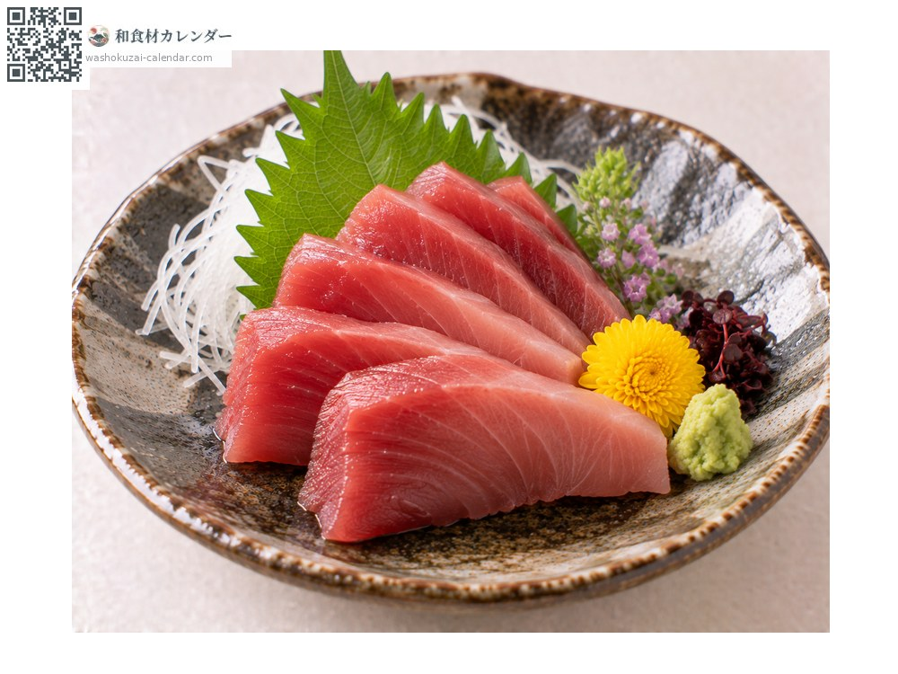
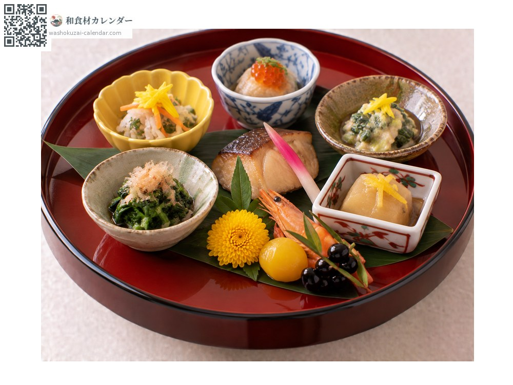
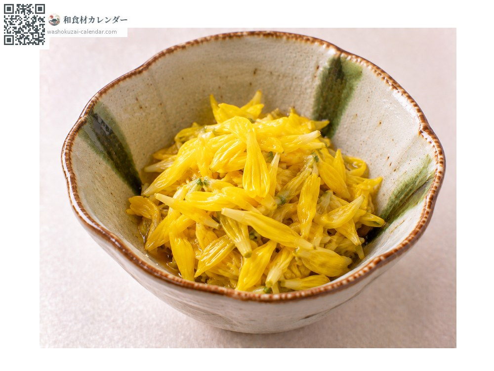

ผัก
ดอกเบญจมาศกินได้
小菊 こぎく kogiku
ชื่ออื่นkogiku
ยังไม่ได้ระบุช่วงที่อร่อยที่สุด

ช่วงที่อร่อยที่สุด
ม.ค.
ก.พ.
มี.ค.
เม.ย.
พ.ค.
มิ.ย.
ก.ค.
ส.ค.
ก.ย.
ต.ค.
พ.ย.
ธ.ค.
ช่วงอร่อยที่สุดมีจำหน่าย
วิธีปรุง

เครื่องเคียงซาชิมิ
เด็ดกลีบลงในซีอิ๊ว เพิ่มทั้งกลิ่นและสีสัน

ตกแต่ง
วางหนึ่งดอกข้างซาชิมิหรือในสำรับฮัสสึน ใช้ได้ทุกฤดู

ยำน้ำส้ม
ลวกกลีบในน้ำผสมน้ำส้มเร็ว ๆ สีจะสดใส
วิธีเลือก
ดอกยังไม่บานเกินไป สีสดใส รอยตัดที่ก้านสดชื่น
วิธีเก็บรักษา
ห่อกระดาษชื้นแล้วปิดสนิทแช่เย็น ใช้ภายใน 2-3 วัน
แหล่งผลิตหลัก
เกร็ดน่ารู้
คือดอกเบญจมาศดอกเดียวที่วางข้างซาชิมิ ปลูกเพื่อการบริโภค วิธีใช้ที่ถูกต้องคือเด็ดกลีบลงในซีอิ๊ว เชื่อว่ามีฤทธิ์ยับยั้งเชื้อ เป็นคนละพันธุ์กับเบญจมาศกินได้ดอกใหญ่ ชนิดนี้เน้นที่สีสันเป็นหลัก